What's in this guide
- Before you start (read this!)
- Opening the Org Chart Builder
- What you see on the screen
- Finding a person
- Moving around a page
- Seeing someone's details
- Turning on Edit
- Changing a title, name or department
- Moving someone to a new manager
- Oops! Undoing a mistake
- Adding a new person
- When someone leaves
- The People list
- Making it official (Publish)
- Printing or saving a PDF
- Sharing the chart with everyone
- Rearranging or hiding pages
- Something looks wrong? (Help)
- One-page cheat sheet
1Before you start
Three things that make this easy.
2Opening the Org Chart Builder
Look for this icon on your desktop: Org Chart Builder
- Double-click the Org Chart Builder icon on your desktop.
- The Org Chart Builder opens in its own window. That's it!
If you are the person who “hosts” the chart
One computer runs the Org Chart Builder for everybody. If that's your computer, double-clicking the icon also opens a black window like this one:
Starting Org Chart Builder. Keep this window open while people use the chart - close it to stop the server. Org Chart Builder 2.0 This PC : http://localhost:8010/ Teammates : http://HR-PC-07:8010/ Official chart : http://HR-PC-07:8010/published Press Ctrl+C to stop.
Don't have the icon yet? (one-time setup)
- Open the Org Chart Builder folder (ask your coordinator where it is).
- Double-click Install_Desktop_Shortcut.
- A window asks a question:
- Type 1 and press Enter if your computer is the host.
- Type 2 and press Enter if someone else's computer is the host. Then type the address they give you (it looks like http://HR-PC-07:8010/) and press Enter.
- The icon appears on your desktop.
3What you see on the screen
The screen has the same few parts every time.
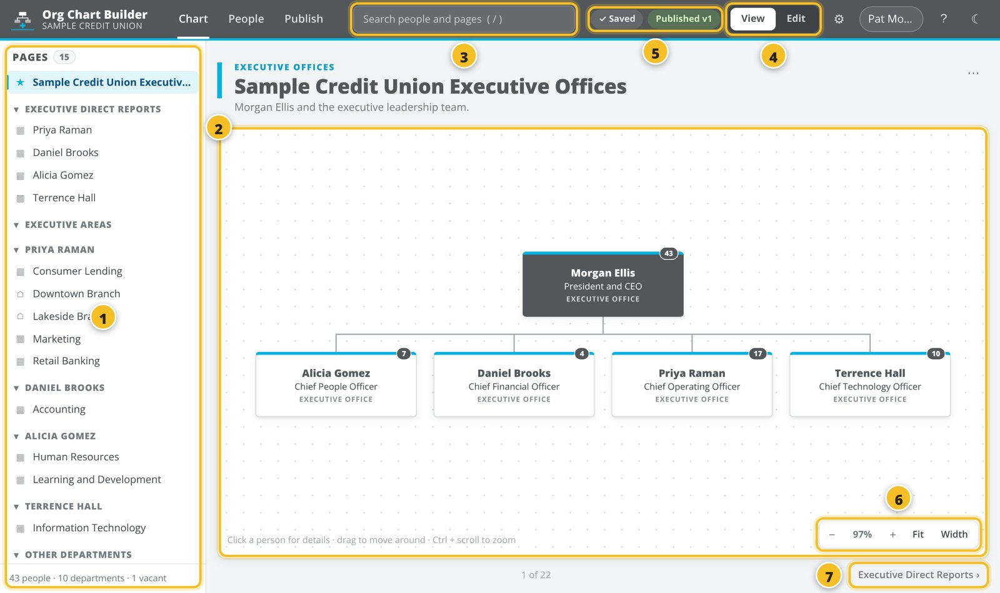
- 1Page list. Every page of the chart. Click a name to open that page.
- 2The chart. The page you are looking at.
- 3Search. Type a name to find someone fast.
- 4View / Edit. View is for looking. Edit is for making changes.
- 5Status. “✓ Saved” means your work is safe. More about the yellow “Draft” label in section 14.
- 6Zoom. Make the chart bigger or smaller.
- 7Next page. Go to the next page (the arrow on the left goes back).
4Finding a person
- Click in the Search box at the top 1.
- Type part of their name (for example angela). You can also type a job title or a department.
- Click the person in the list that drops down 2.
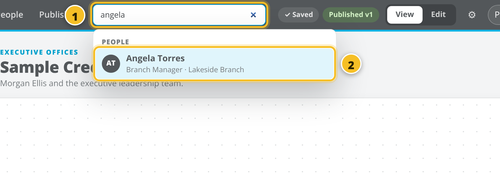
The chart jumps to the right page and the person's card flashes yellow. Their details open on the right (see section 6).
↑ Back to top5Moving around a page
Going to another page
Click a page name in the page list on the left 1. The page you are on is highlighted in blue. The headings in capital letters 2 are groups. Click a heading to fold it away or open it again.
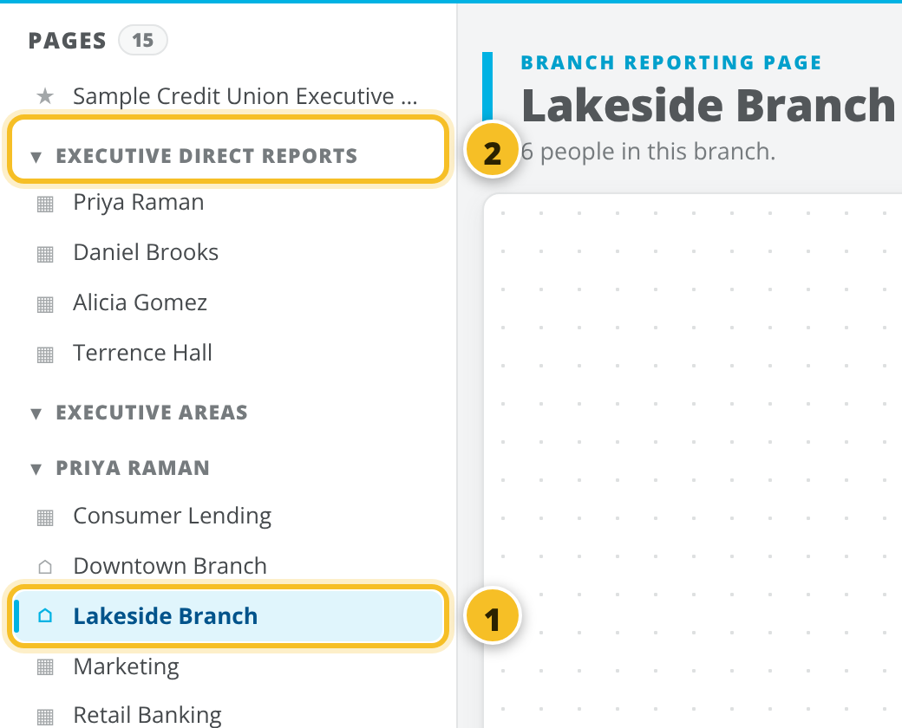
Moving the chart around
Big departments don't fit on the screen. To see the rest:
- Click on an empty spot of the chart (not on a person), hold the mouse button down and drag. The chart moves with your mouse.
- Or just scroll with your mouse wheel or touchpad.
Making it bigger or smaller
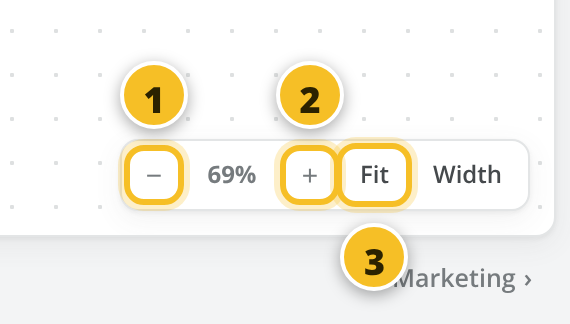
- 1– makes it smaller.
- 2+ makes it bigger.
- 3Fit shows the whole page at once.
- ?Lost? Click Fit and you're back to the whole page.
6Seeing someone's details
- Click a person's card 1.
- A panel opens on the right 2. It shows their manager, department, email, and the people who report to them.
- Click any blue name in the panel to jump to that person.
- To close the panel, click the ✕ in its top-right corner (or press Esc).
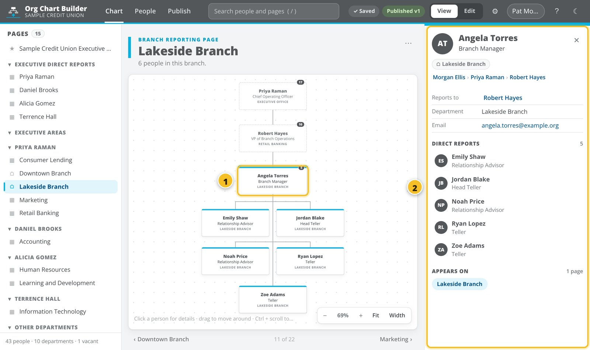
7Turning on Edit
You can't change anything by accident. Changes only work after you switch to Edit.
- Click Edit at the top right 1. It turns blue.
- The first time, type your name and click Continue.
- When you're finished, click View to go back to look-only mode.
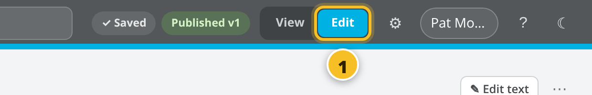
How do I know my change is saved?
Look at the top of the screen. “✓ Saved” means your change is safe. You don't need to do anything else.
8Changing a title, name or department
- Make sure Edit is on.
- Click the person's card. The panel on the right now shows boxes you can type in.
- Click in the box you want to change, for example Job title 1.
- Type the new text and press Enter. Done! The card on the chart changes right away.
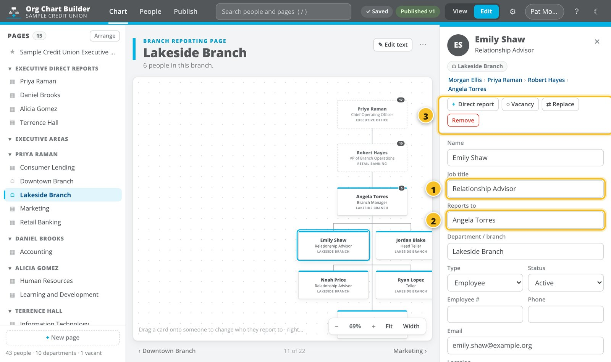
The Reports to box 2 changes who the person's manager is. Click it, type the manager's name, and click the right person in the list.
The buttons at the top of the panel 3 do the bigger jobs: adding someone under this person, adding a vacancy, replacing them, or removing them. These are explained in the next sections.
↑ Back to top9Moving someone to a new manager
Two ways. Use whichever feels easier.
Way 1: drag and drop
- Make sure Edit is on.
- Put your mouse on the person's card 1, press and hold the mouse button.
- Drag the card on top of their new manager's card 2. It gets a green outline when you're in the right spot.
- Let go of the mouse button.
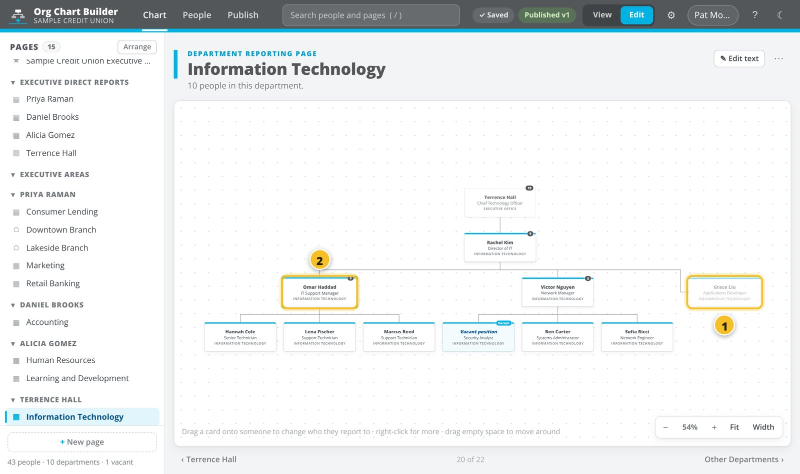
Way 2: type the new manager
Click the person, then change the Reports to box in the panel (see section 8).
10Oops! Undoing a mistake
After most changes, a green message appears at the bottom of the screen with an Undo button 1. Click it, and the change is reversed.
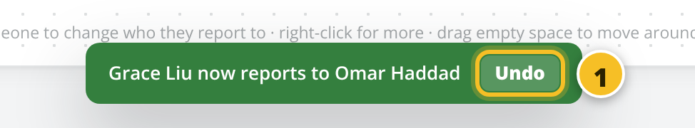
Missed the message? Press Ctrl + Z on your keyboard (hold Ctrl, tap Z). Press it again to undo the change before that, and so on.
Undid too much? Ctrl + Y puts it back.
11Adding a new person
- Make sure Edit is on.
- Find the new person's manager on the chart.
- Right-click the manager's card. That means clicking with the right mouse button. A menu opens 1.
- Click Add a direct report…
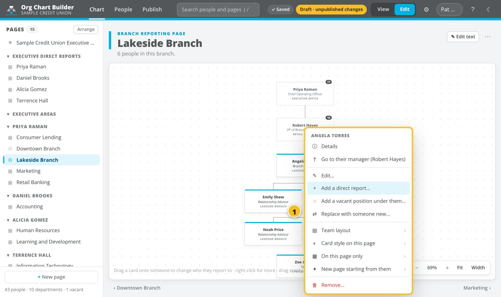
- Type the person's Name and Job title 1. The manager and department are already filled in for you.
- Click Add 2.
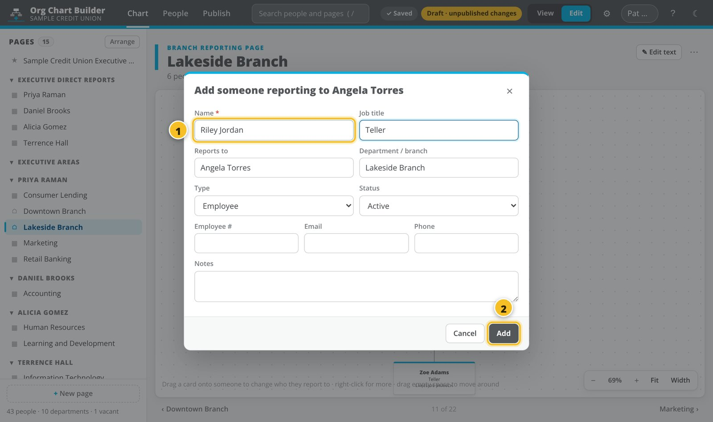
The new person appears on the chart, flashing yellow so you can spot them.
Adding an open (vacant) position
Right-click the manager and choose Add a vacant position under them… Leave the name empty, type the job title, and click Add.
Someone was hired into a vacancy
Right-click the Vacant card, choose Fill this vacancy…, type the new person's name and click Fill position. Anyone who reported to the vacancy now reports to the new person.
↑ Back to top12When someone leaves
- Make sure Edit is on.
- Right-click the person's card and choose Remove… (or click them and use the red Remove button in the panel).
- Choose what should happen:
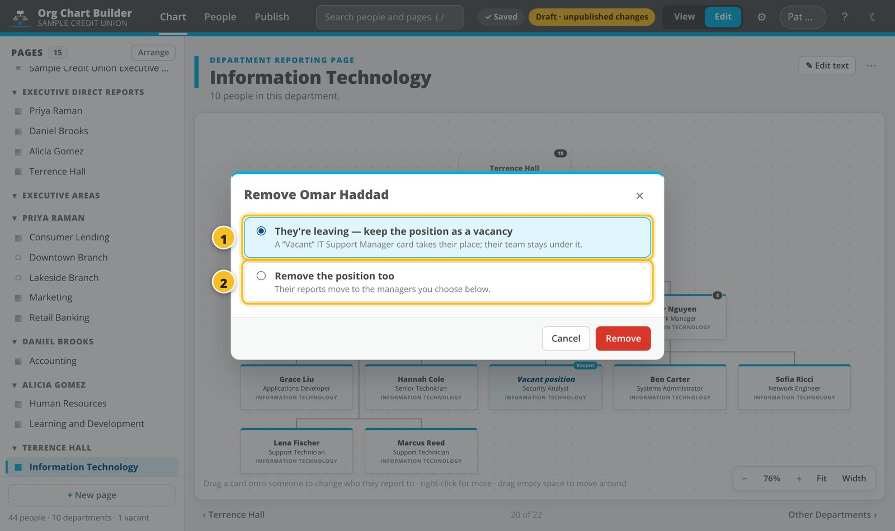
- 1“They're leaving — keep the position as a vacancy”. Pick this when the job will be filled again. A “Vacant” card takes their place, and their team stays where it is. This is usually the right choice.
- 2“Remove the position too”. Pick this when the job is going away. The window then lists each person who reported to them. Choose a new manager for each one, or use Apply to all to give them all the same new manager.
- Click the red Remove button.
Someone is replaced by a new person
Right-click them and choose Replace with someone new… Type the new person's name and click Replace. The new person takes over the same title, manager and team.
↑ Back to top13The People list
Click People at the top of the screen to see everyone as a list, like a spreadsheet.
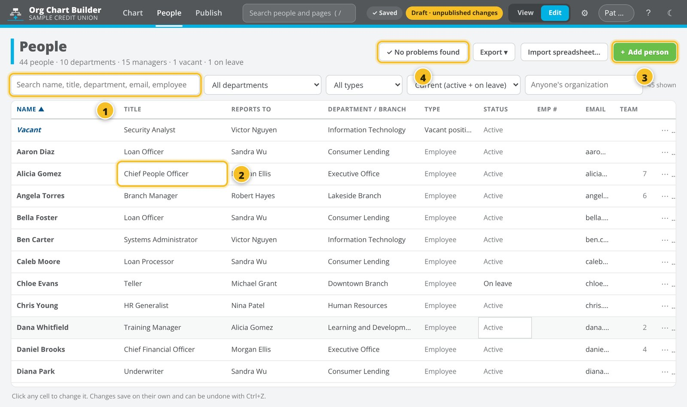
- 1Search the list by name, title, department or email. The menus beside it narrow the list down.
- 2In Edit, click any box to change it. Type, then press Enter.
- 3+ Add person adds someone new.
- 4Things to check lists possible mistakes, for example two people with the same name, or someone whose manager was removed. Click Show next to a problem to see who it's about.
To get the list into Excel, click Export ▾ and choose Excel workbook (.xlsx). The file goes to your Downloads folder.
14Making it official (Publish)
Your changes are a draft until you publish. While there are unpublished changes, the top of the screen shows a yellow Draft · unpublished changes label.
Publishing is like printing the “official copy”. Everyone who opens the official chart sees the new version. Only publish when the changes have been checked.
- Click Publish at the top of the screen.
- Read the What changed list 2. It shows exactly who was added, removed or moved since the last official version. Is it right?
- Click the green Publish changes button 1.
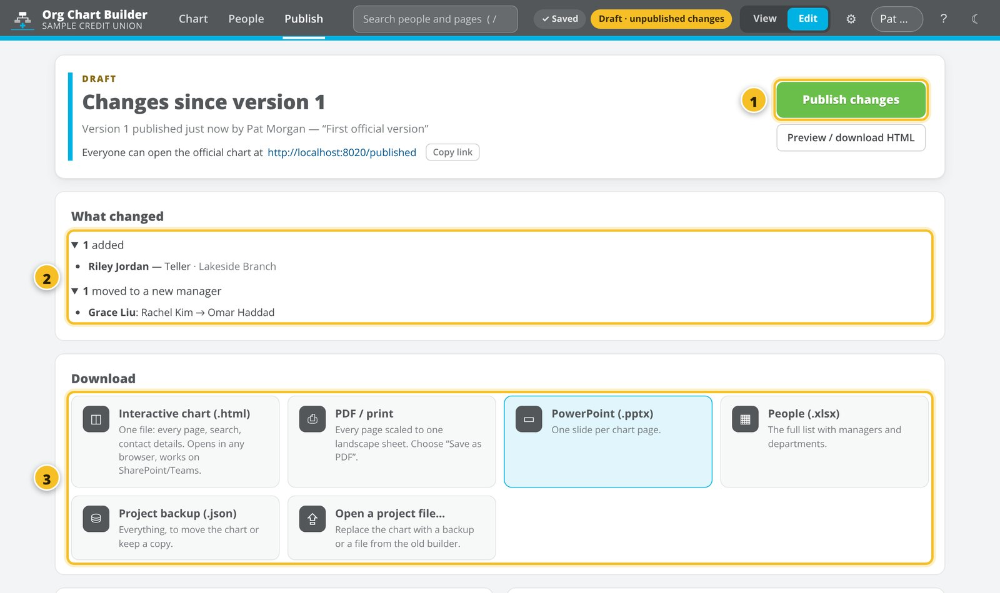
- Type a short note about what changed 1, for example “New teller at Lakeside, Grace moved to IT Support”.
- Click Publish 2.
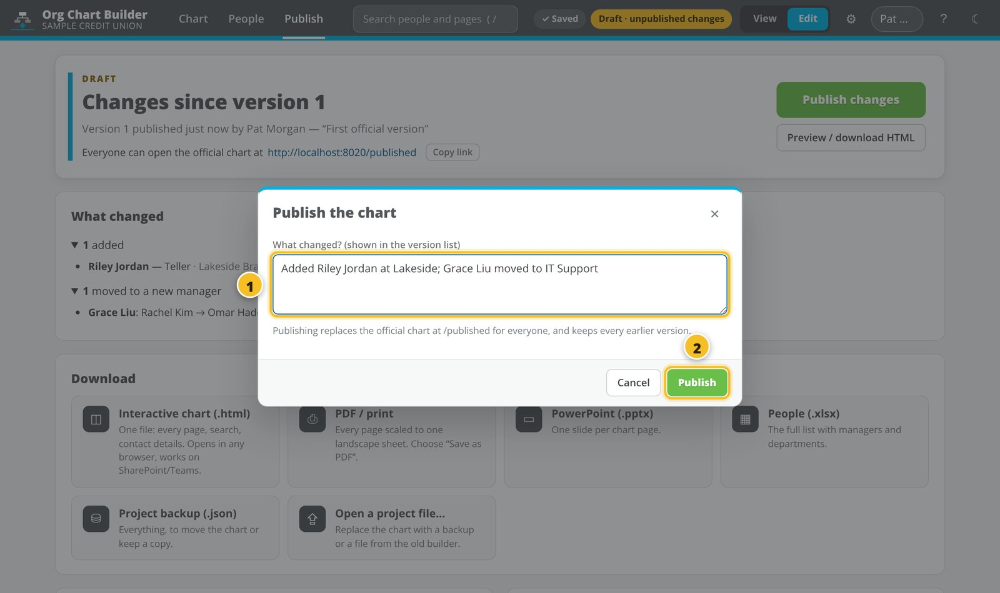
The top now says “Version 2 is the official chart”, and the label at the top turns green: Published v2.
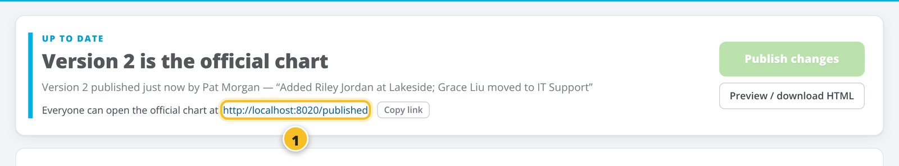
15Printing or saving a PDF
- Open the page you want to print.
- Click the ⋯ button at the top right of the page, then Print / save as PDF… 1.
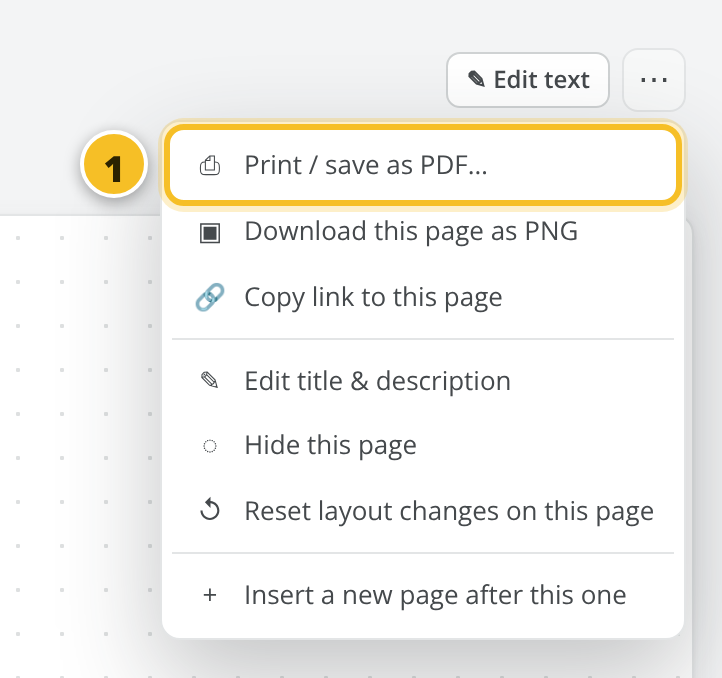
- Choose what to print: This page, one executive's area, or The whole chart.
- Click Open print view.
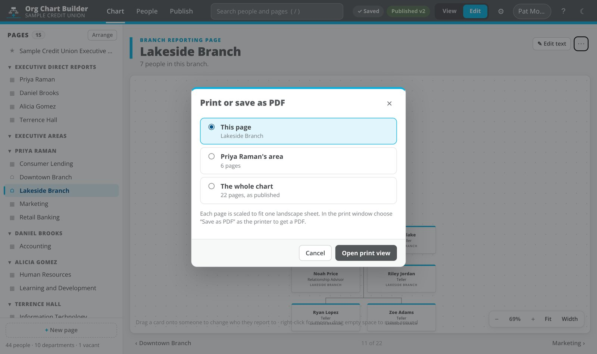
- The print window opens. To print on paper, pick your printer and click Print.
To get a PDF file, change the Destination (or Printer) to Save as PDF and click Save.
Other files you can get
On the Publish screen, under Download, you can also get a PowerPoint (one slide per page), an Excel list of everyone, and an interactive chart file that opens in any web browser.
17Rearranging or hiding pages (optional)
The pages are made for you automatically from who reports to whom. You don't have to touch them, but you can change their order.
- Make sure Edit is on.
- Click Arrange at the top of the page list 1.
- To move a page, drag it by the dotted handle 2 to a new spot.
- To hide a page from the official chart, click the round button 3 at the end of its row. Click it again to show it.
- Click Done when you're finished.
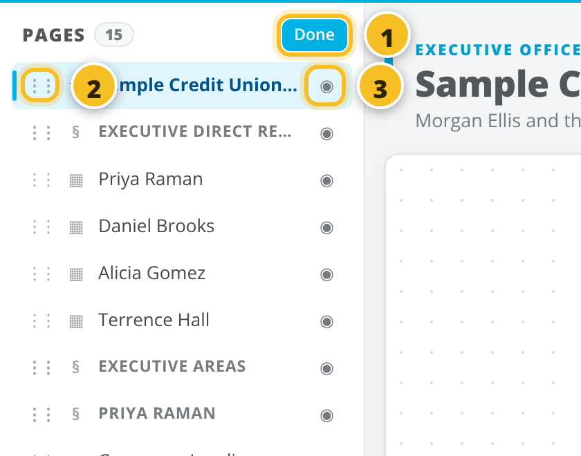
To change a page's title, open the page and click ✎ Edit text at its top right.
↑ Back to top18Something looks wrong? (Help)
| What you see | What to do |
|---|---|
| I can't change anything. Nothing happens when I drag or right-click. | You're in View mode. Click Edit at the top right (section 7). |
| “This site can't be reached” or a blank window | The host computer's black window was closed, or the computer is off or asleep. On the host computer, double-click the Org Chart Builder icon. Everyone else: wait a minute, then press F5 to reload. |
| A red label at the top: “Offline · 2 unsaved” | The connection dropped for a moment. Don't close the window. Your changes are kept and are sent as soon as the connection is back. The label then changes to “✓ Saved”. |
| The chart is tiny, or I'm lost somewhere on the page | Click Fit in the bottom-right corner of the chart (section 5). |
| I made a change by mistake | Click Undo on the green message, or press Ctrl + Z (section 10). |
| I need yesterday's version back | Go to Publish and scroll down to Snapshots (automatic backups) or Published versions. Click the ⋯ next to the one you want, then Restore…. The current chart is backed up first, so this is safe. Tip: tell your colleagues before you do this. |
| Someone is on the wrong page or missing from a page | Pages are built from each person's Department and Reports to. Click the person and check those two boxes (section 8). |
| A message says “Updated with Pat's changes” | Nothing to do. A colleague changed something and your screen caught up. |
| The yellow label says “Draft · unpublished changes” | There are changes that aren't official yet. Publish when they're checked (section 14). |
| Where did my PDF / Excel / PowerPoint go? | Into your Downloads folder. Open File Explorer and click Downloads on the left. |
| The black window says “Python is not installed” | Ask your IT contact to install Python on the host computer. This is a one-time setup. |
Still stuck? Click the ? button at the top right of the Org Chart Builder for a short reminder, or contact your Org Chart coordinator.
↑ Back to top19One-page cheat sheet
Print this page and keep it next to your keyboard.
| I want to… | How |
|---|---|
| Open the Org Chart Builder | Double-click the desktop icon. Host: leave the black window open. |
| Find someone | Type their name in Search (top), then click them. |
| See the whole page | Click Fit (bottom right of the chart). |
| Move around a big chart | Drag an empty spot, or scroll. |
| Make changes | Click Edit (top right). Changes save by themselves. |
| Change a title or name | Click the person, type in the panel on the right, press Enter. |
| Change someone's manager | Drag their card onto the new manager's card. |
| Add a person | Right-click the manager, then Add a direct report… |
| Add an open position | Right-click the manager, then Add a vacant position under them… |
| Fill an open position | Right-click the Vacant card, then Fill this vacancy… |
| Someone leaves | Right-click them, then Remove…, then keep the position as a vacancy. |
| Undo a mistake | Undo on the green message, or Ctrl + Z. |
| Make it official | Publish tab, then Publish changes, type a note, then Publish. |
| Print or make a PDF | ⋯ (top right of a page), then Print / save as PDF… |
| Get the list in Excel | People tab, then Export ▾, then Excel workbook. |
| Share the chart | Publish tab, then Copy link, and paste it in an email. |
Org Chart Builder · Step-by-step guide